Multi-Robot Autonomous Vehicle Transfer at Ro-Ro Terminals
|
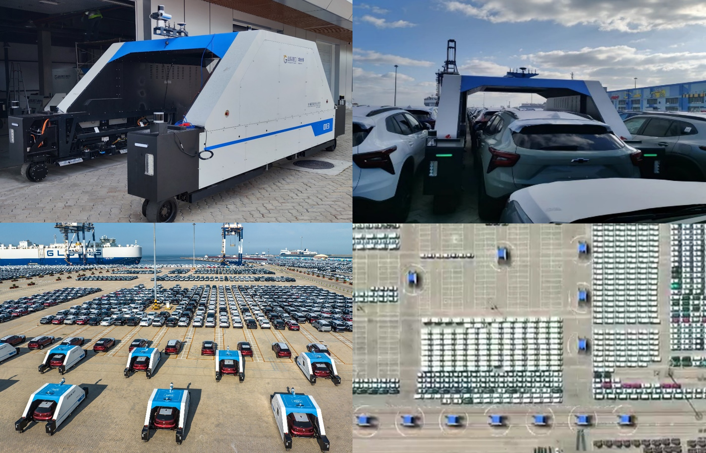 |
University–Industry Collaboration | 2023.06 – 2025.06
Summary: Developed an autonomous transfer system integrating robots, onboard operations, and cloud scheduling to address throughput growth, labor shortages, and increasingly complex ro-ro terminal operations. Deployed 15 robots for unmanned operations at Yantai Port, Shandong, demonstrating reliable, efficient vehicle handling and supporting terminal automation.
Responsibilities: 1. Designed a docking method combining pure pursuit control and dynamic LiDAR filtering for centimeter-level vehicle docking; 2. Developed a deep reinforcement learning local planner with LSTM and multi-head attention for dynamic obstacle avoidance; 3. Built a multi-robot scheduling system using dynamic road-network updates and space-time A* planning to resolve path conflicts; 4. Led deployment, field commissioning, technology transfer, and documentation, and secured one key graduate research and innovation project as project lead.
[Video]
|
Intelligent Inspection Robots for Harsh Industrial Environments
|
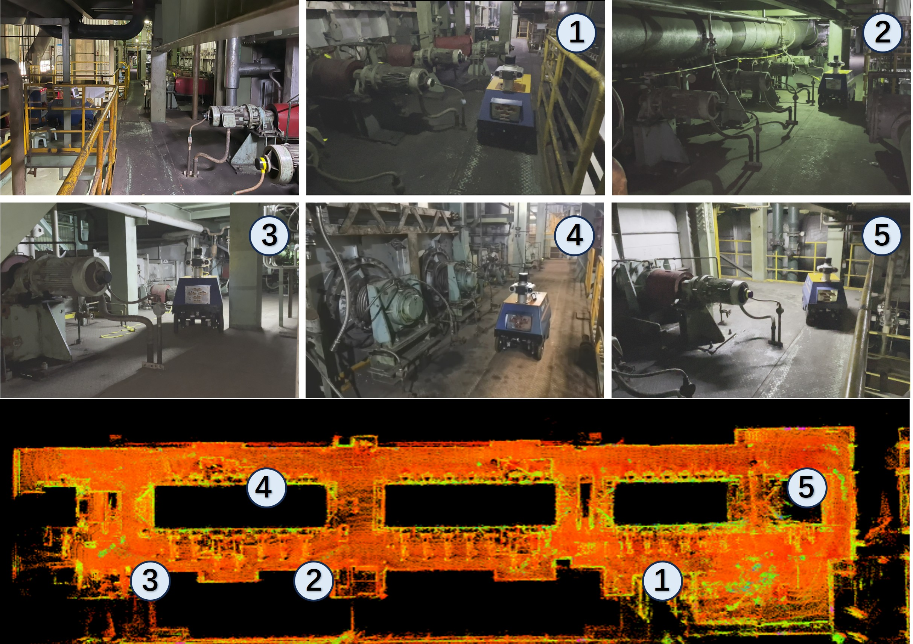 |
University–Industry Collaboration | 2024.01 – 2024.12
Summary: Developed an autonomous inspection robot for water-cooled furnace-roll bearing housings and other high-temperature equipment in continuous annealing furnaces. The system combines autonomous navigation, multi-sensor perception, condition monitoring, fault diagnosis, and autonomous charging to improve inspection accuracy, timeliness, and maintenance efficiency while reducing personnel exposure to hazardous environments.
Responsibilities: 1. Proposed guided model predictive path optimization with safe corridor constraints for smooth, safe trajectories; 2. Developed deep reinforcement learning-based multimodal trajectory tracking with autonomous motion-mode switching; 3. Led technical feasibility studies, deployment, commissioning, and performance optimization, and completed project closeout and documentation.
[Video]
|
Advanced Driver Assistance for Vibroseis Vehicles on Complex Terrain
|
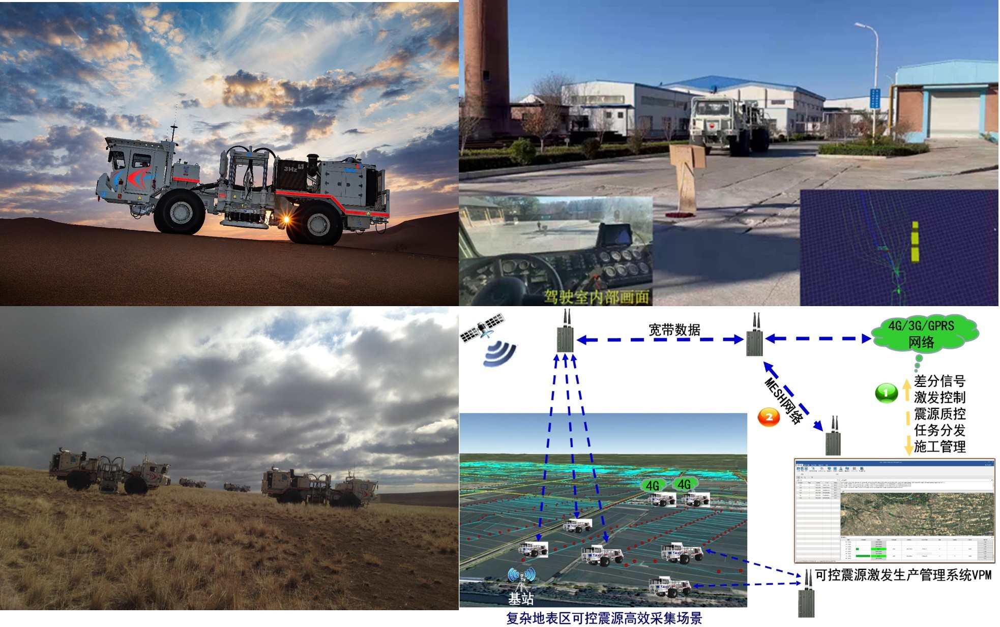 |
University–Industry Collaboration | 2025.01 – 2025.06
Summary: Developed an advanced driver assistance system with industry partners for vibroseis vehicles operating in mines, deserts, and other unstructured environments. The system integrates real-time terrain perception, autonomous navigation and control, multi-vehicle coordination, and excitation-point planning to reduce operating costs and improve safety, efficiency, and consistency in geophysical exploration.
Responsibilities: 1. Designed terrain exploration using adaptive sampling and Bayesian learning for autonomous off-road path planning; 2. Proposed terrain-constrained multi-vehicle deployment and pose optimization; 3. Developed multi-vehicle planning that combines terrain assessment and bottleneck coordination for coordinated convoy traversal.
[Video]
|
Dynamic UAV Recovery Using a UGV and a Stewart Platform
|
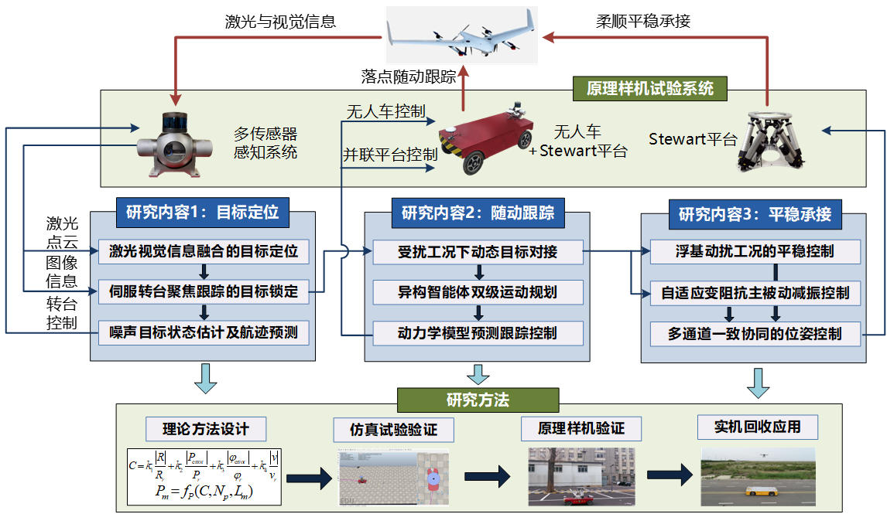 |
National Natural Science Foundation of China — General Program | 2023.01 – 2024.06
Summary: Proposed mobile UAV recovery through dynamic docking with a ground platform, overcoming fixed landing-site constraints. The framework combines UAV localization and trajectory prediction, unmanned ground vehicle (UGV) tracking, and compliant capture using a parallel mechanism, supporting special and emergency recovery missions in complex, unknown environments for military and industrial applications.
Responsibilities: 1. Contributed to the project proposal, technical justification, feasibility analysis, and implementation plan; 2. Helped design and validate UGV path tracking for dynamic docking, including algorithm testing and optimization.
|
Speed Control System for a Hydro-Viscous Clutch
|
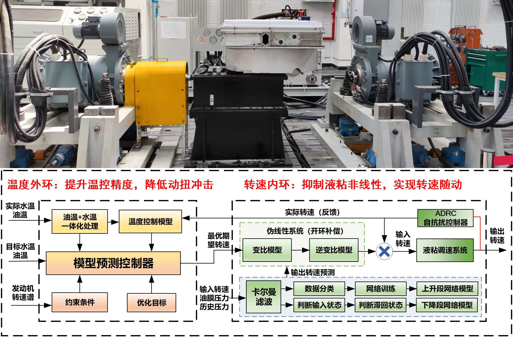 |
Fundamental Research Project, State Administration of Science, Technology and Industry for National Defense | 2022.09 – 2023.12
Summary: Developed coordinated multi-parameter speed control for a hydro-viscous clutch with strong nonlinear and hysteretic behavior caused by coupled speed, lubricant temperature, and pressure effects. The method improves dynamic response and stability under engine speed and environmental disturbances, widens the operating range, and reduces speed fluctuations and torque shocks, enabling smooth stepless speed regulation and precise power-compartment thermal management.
Responsibilities: 1. Modeled and analyzed the system using experimental data and refined its coupled multi-parameter model; 2. Proposed coordinated water-temperature, oil-pressure, and speed control loops; 3. Prepared project closeout materials and organized experimental results and research outputs.
|
Wind Turbine Characteristics and Intelligent Active Power Control of an Energy-Storage Hydraulic Wind Power System
|
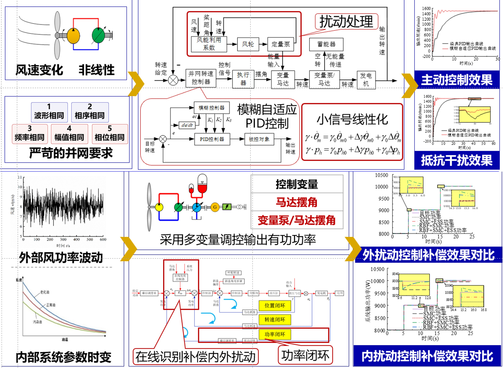 |
Master's Thesis | 2023
Summary: Modeled the wind turbine and main transmission of an energy-storage hydraulic wind power system and analyzed disturbance effects on torque and active power. Developed fuzzy PID control for grid-connected speed regulation and combined sliding mode control with an RBF neural network for adaptive compensation and fast active power control. Integrated energy storage to improve response and validated the methods on a 30 kW experimental platform.
[Paper]
|
Electro-Hydraulic Servo Channel Control Module
|
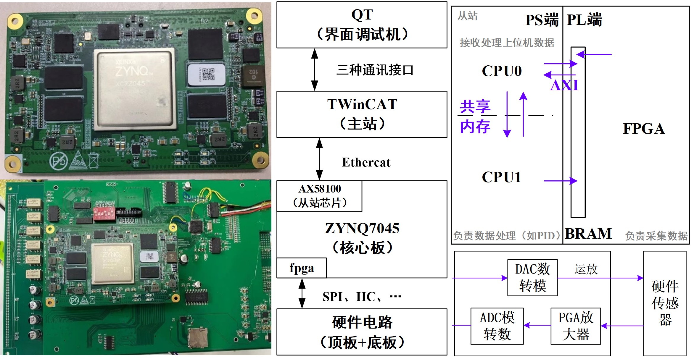 |
University–Industry Collaboration | 2021.09 – 2022.03
Summary: Developed an electro-hydraulic servo channel control module for motion control, data processing, sensor acquisition, servo valve actuation, and communication. Installed in a dedicated enclosure, it supports independent multi-channel control and real-time data exchange for precision electro-hydraulic servo systems.
Responsibilities: 1. Contributed to drivers for AD5754, PGA280, ADS127L01, and CH423 chips; 2. Performed hardware and functional tests with serial debugging tools and prepared test plans and reports; 3. Conducted simulation and integrated debugging in Vivado to identify code issues and improve stability.
|
Hydraulic Wind Power Systems: Theory and Industrial Demonstration
|
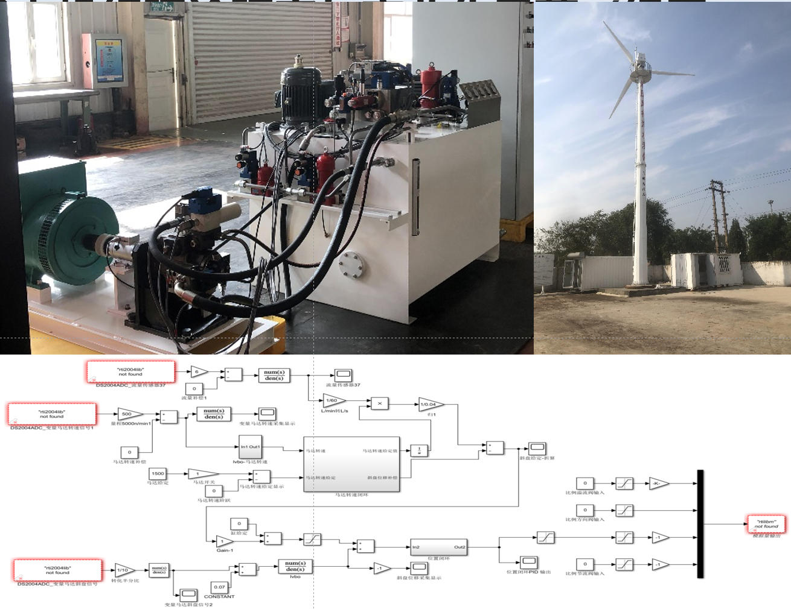 |
University–Industry Collaboration | 2021.05 – 2021.09
Summary: Contributed to China's first hydraulic wind power demonstration prototype. The project combined control research, algorithm development, system integration, and commissioning to achieve stable grid-connected generation through coordinated speed and power regulation.
Responsibilities: 1. Assisted with electrical installation and wiring checks for the 30 kW unit; 2. Implemented grid-connected speed and active power control using MATLAB and dSPACE ControlDesk, and supported system testing and performance validation.
|
Hydraulic Wind Power Test Platform at Nanjing Institute of Technology
|
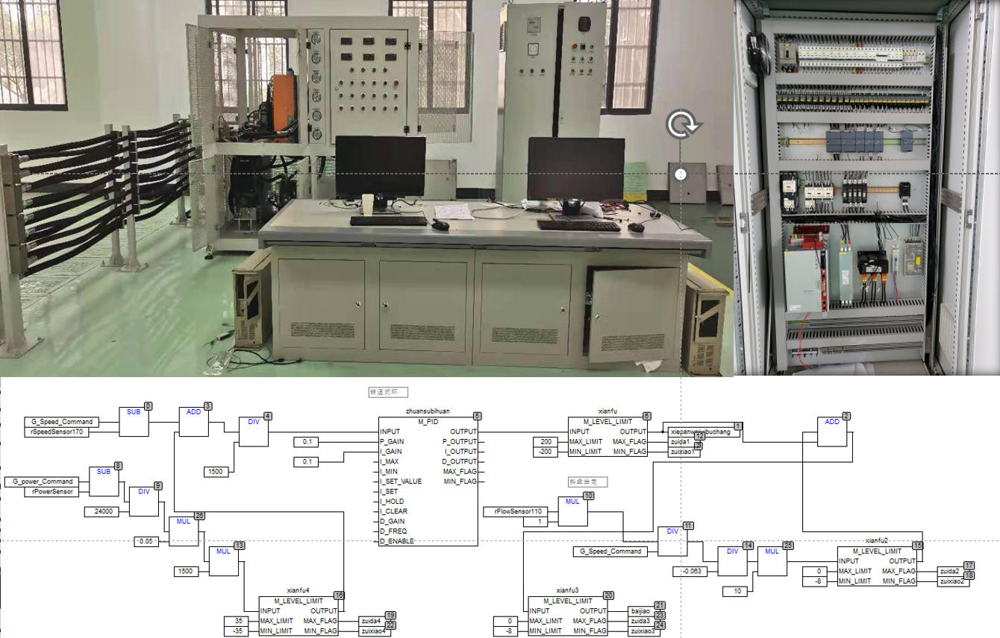 |
University Strategic Collaboration | 2021.01 – 2021.05
Summary: Built a hydraulic wind power research platform integrating wind turbine simulation, hydraulic transmission, supervisory control, and generator grid connection. A servo motor simulates turbine characteristics, while a fixed-displacement pump and variable-displacement motor form the hydraulic transmission. A PLC and Moog controller provide logic control and closed-loop speed and power regulation. The platform supports system modeling, control validation, and performance testing.
Responsibilities: 1. Implemented servo motor speed control with MACS and a Moog controller alongside control engineers; 2. Integrated the grid-connection cabinet and Shark 200 for safe grid connection and active power control; 3. Collected and analyzed speed and active power data and prepared the project acceptance report.
|
Simulation-Based Improvement of Truck Crane Slewing Performance
|
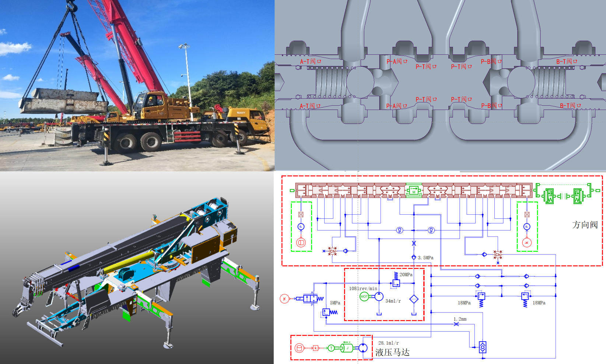 |
University–Industry Collaboration | 2020.06 – 2020.12
Summary: Built an integrated mechanical, electrical, and hydraulic simulation platform to investigate crane slewing instability. Developed and refined a high-fidelity model using physical models and experimental data, identified key causes of instability, and evaluated corrective measures in simulation and full-machine tests.
Responsibilities: 1. Built hydraulic models in AMESim with hydraulic engineers and simplified mechanical models for coupled simulation; 2. Helped plan and conduct bench and full-machine tests, including data acquisition and comparison; 3. Identified pressure pulsation sources and proposed a slewing stability control strategy.
|
Design of a 5000 kN Powder Compaction Hydraulic Press
|
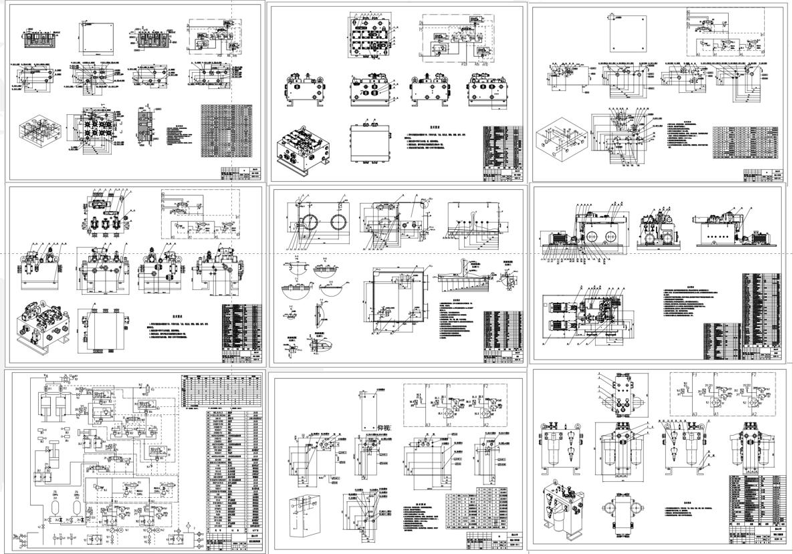 |
Bachelor's Thesis | 2019 – 2020
Summary: Designed a powder compaction hydraulic press with a rated force of 5000 kN to meet production and quality requirements. Completed process analysis, functional decomposition, hydraulic circuit design, parameter calculations, and component selection. Designed a modular control unit with three valve blocks and a horizontal tank and pump-station layout for compactness and maintainability. Produced hydraulic schematics, component and assembly drawings, and installation layouts to document a practical engineering design.
|
Pneumatic Crawling Robot
|
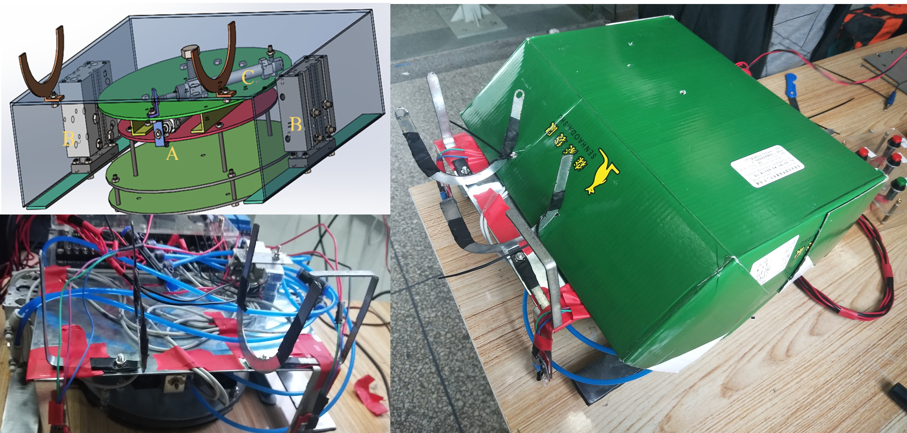 |
Mechatronic System Design Course Project | 2019
Summary: Designed a pneumatic crawling robot with color sensing and PLC control for forward and backward motion, turning, and automatic line following. Coordinated support and locomotion cylinders generate movement, with direction determined by the actuation sequence. The controller uses 13 input channels and six outputs for solenoid directional valves, integrating sensing, pneumatic actuation, and mechanical control in a compact, easy-to-operate system.
Responsibilities: Optimized the design, assembled the prototype, programmed and commissioned the system, prepared patent documentation, and delivered project defense and results presentations.
[Video]
|
Non-Contact Thickness Gauge
|
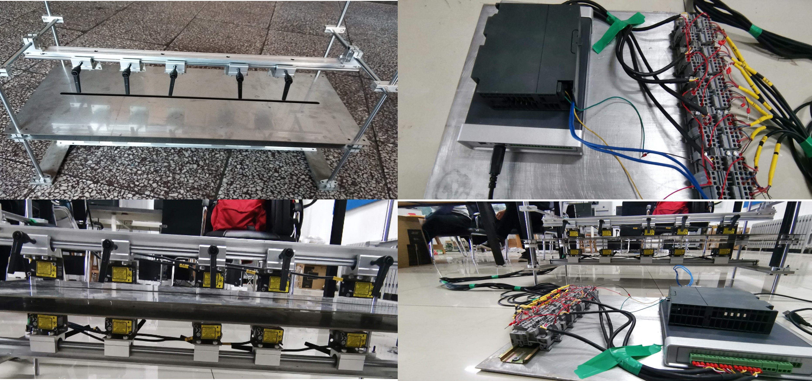 |
Undergraduate Innovation and Entrepreneurship Training Program | 2018 – 2019
Summary: Developed a non-contact thickness gauge under a supervisor-led research project for high-end cold-rolled strip production. Data analysis identified strip misalignment as the main measurement error source. Designed a multi-sensor sliding-rail mechanism with synchronized upper and lower laser sensors, digital signal transmission, and multipoint acquisition to reconstruct strip cross-sectional profiles and improve measurement accuracy and stability.
Responsibilities: Led project planning, technical design, and improvements to the mechanism and measurement system. Organized integrated testing and experimental validation, prepared technical reports, and led project defense and results presentations.
[Video]
|
|